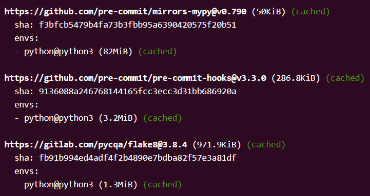
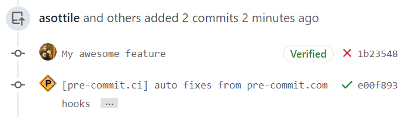
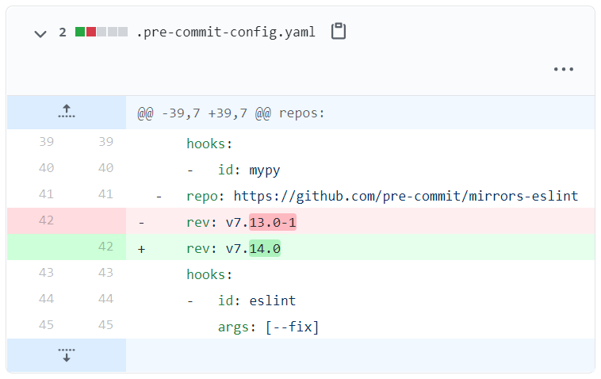

supported hosting platforms: currently only GitHub is supported, more to come in the future!
configuration: zero configuration setup -- nothing is needed beyond the
.pre-commit-config.yaml file you already have!
caching: tool caching is baked in and shared across all users. this means that the more users there are of pre-commit.ci, the more likely you will get faster builds!

auto fixing pull requests: if tools make changes to files during a pull request, pre-commit.ci will automatically fix the pull request.
pre-commit.ci will run on all pull request commits, but will not push for commits made by bots. if you'd like to force pre-commit.ci to fix a commit made by a bot, you can trigger a re-run.

automatic updates: pre-commit.ci will periodically autoupdate your configuration ensuring that your hook versions are kept up to date. this autoupdate is currently scheduled weekly at approximately 18:00 UTC.
here is an example autoupdate pull request.

re-running a pull request: you can trigger a re-run on a pull request by closing and re-opening.
if you'd like to support the development there are two ways to sponsor: